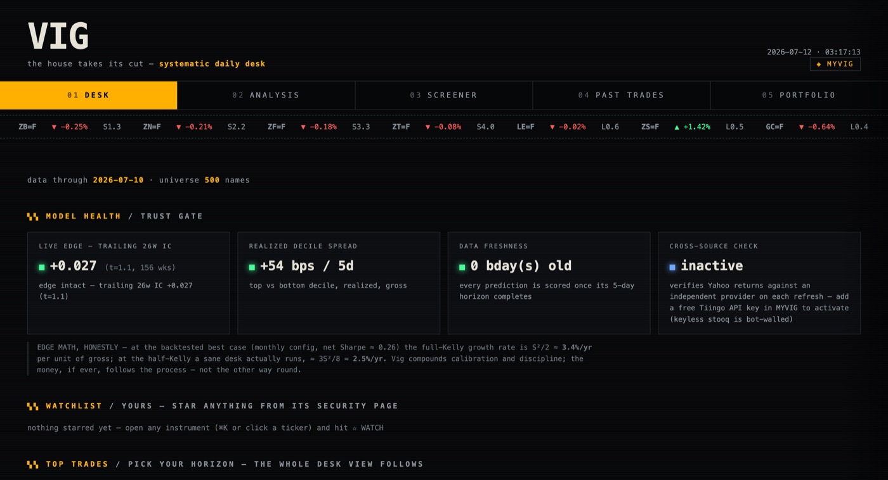
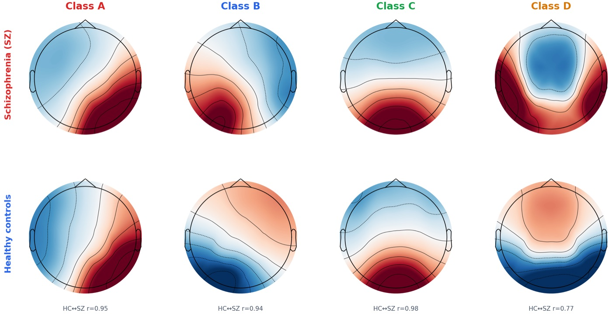

I study computer science at SEAS and economics & finance at Wharton (Penn, Class of 2028). Right now I'm a software engineer at Tara Ventures in Singapore, co-founder of Bridge AI, and recruiting for Summer 2027 software internships.
Most of what I build sits somewhere between software systems, markets, and the brain. The habit that ties it together: build the thing, then spend twice as long trying to prove the result is fake. It usually half is.
Now, October 2026: classes at Penn · software engineering at Tara Ventures · recruiting for Summer 2027.
Projects
nanoserve
An LLM inference server from scratch in Python/PyTorch. The interesting part is the scheduler, not kernels. I built the ladder from a naive loop to continuous batching to a paged KV cache with a Triton attention kernel and CUDA graphs, on one GPU:
tok/s naive 24 ▌ static batching 126 ██▌ continuous 243 █████ paged KV + triton 252 █████▎ + CUDA graphs 578 ████████████ p99 TTFT: 63 s (naive) → 0.57 s (final)
That's 23.7× naive and 86% of vLLM's throughput on the same hardware, at lower p99 time-to-first-token. I also ported the scheduler to C++ and proved the port equivalent by hashed replay of every scheduling decision, and sharded a 7B model that doesn't fit on one GPU across two at 7.8× naive.
Then the harness became an audit: every engine is checked token-exact against the baseline, and no speedup counts until it clears a measured noise floor. That rule killed five of my own first-pass results before it touched anyone else's. Chaos-testing cancellation under load turned up the same bug class in vLLM's V1 scheduler (#49684).
Vig
My market-research platform: a data pipeline that regenerates a seven-screen research terminal every day (model desk, screener, graded past calls, a live paper desk on prediction markets) with no server anywhere. Everything runs on GitHub Actions cron, and the repo is the database.

The data layer is the part I'd show an interviewer. A 20-hour rate-limited backfill is distributed across a 12-worker CI matrix, with the partitioning invariants pinned by tests and an idempotent merge: 74k records in 70 minutes, 12/12 workers green on the first run. When Python became the bottleneck I wrote a C++17 parallel stream-reconstruction engine: 2.0M messages/sec, 8× the Python reference, output parity-pinned against it on all 246 files. Cross-feed reconciliation caught my fill model overcounting by 1,735×; it was counting cancels as trades.
The research side exists to attack its own backtests: walk-forward validation, vol targeting, and a point-in-time S&P universe I rebuilt specifically to measure survivorship bias instead of guessing at it. Most of my first edge turned out to be a backtest artifact. The smaller one that survived is what runs on the terminal.
EEG microstate pipeline
From my research internship at Forschungszentrum Jülich: one preprocessing recipe and one global microstate model across 8 public resting-state EEG datasets: 504 people, 8 clinical conditions. Alzheimer's separates from controls at 0.89 AUC, and the Alzheimer's-trained model transfers at 0.92 to frontotemporal dementia it never saw.

The result I trust most is a negative one: a depression finding that looked real until the robustness battery (age regression, 5,000-shuffle permutation tests, cross-site validation, ComBat) exposed it as a spectral confound between recording sites.
Time Bank
A kids' app with its own economy: chores and routines earn minutes, parents approve requests and stock a reward store. React Native and Firebase, live on the App Store and Google Play.
Smaller things: prereg, a stdlib-only Python library of the measurement discipline from Vig's paper desk (evidence bars, locked adjudication, self-grading forward ledgers) · job-applier, a Chrome extension that fills out job applications for me.
If you only read two things, make it desk's artifact ledger (nine edges that died under measurement, with receipts) and the instructive failures in nanoserve's kernel notes. The failures are more useful than the wins.
Work
Tara Ventures
Built the company's first ad-optimization pipeline: LLM-generated creative A/B-tested across verticals with a bandit-clustering feedback loop, plus multi-armed-bandit budget allocation that prunes underperformers on its own. Ad-driven revenue went from zero to 5:1 ROAS across 30 campaigns.
Bridge AI
An agentic system that takes real CRM actions across a 45-tool registry, at 87.2% tool-selection accuracy on labeled tasks. All 22 state-mutating capabilities are confirm-gated or undo-backed, enforced as a load-time invariant so nobody can ship a tool that skips it. The routing layer spreads calls across 7 LLM providers with per-task routing, fallback chains, and per-call cost attribution; a dual-judge benchmark exposed misrouted traffic, and rerouting cut per-task inference cost 73% at tied quality. RAG is hybrid Postgres/pgvector, and fp16 quantization halved vector storage at no measured recall cost.
RWTH Aachen · Forschungszentrum Jülich
The EEG work above started here.
A*STAR, Centre for Frontier AI Research
Benchmarked 10 LLMs across 20 datasets on multimodal sarcasm detection under Prof. Cheston Tan, then fine-tuned a custom model on what the benchmark showed.
Jiro Web Solutions
A web agency I started in high school, serving small businesses across Asia. Hired and trained a team of five; we shipped 20+ production sites and mobile apps with auth, Stripe payments, and Supabase/Firebase backends.
Background
Penn, Class of 2028: B.S.E. in computer science (SEAS) and B.S. in economics & finance (Wharton), 3.8 GPA. Before college: USACO Gold Division and American Math Olympiad gold medalist. Day to day I'm in Python, TypeScript, and C++; PyTorch and pandas for models, Postgres/pgvector for data, React and React Native for frontends.
Contact
Hiring software engineers for Summer 2027? saviswa@seas.upenn.edu. Resume here.
No inline preview on this screen size. Download the PDF